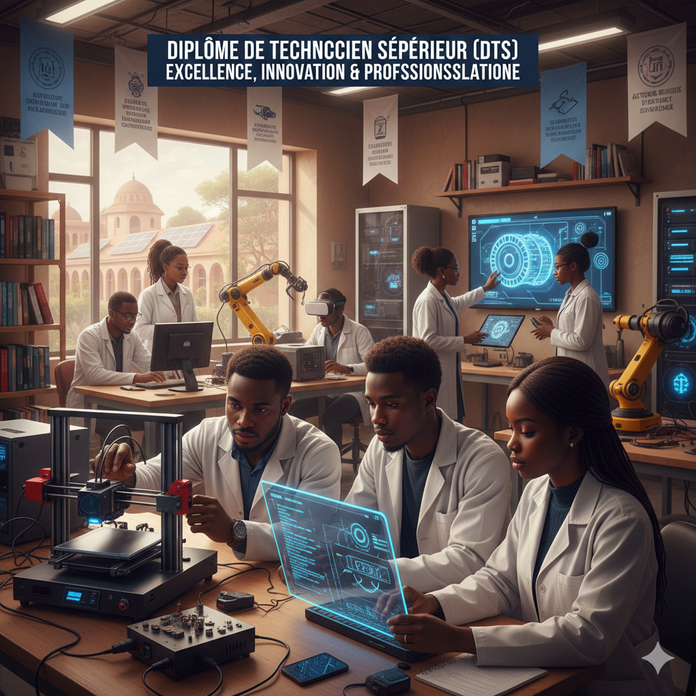
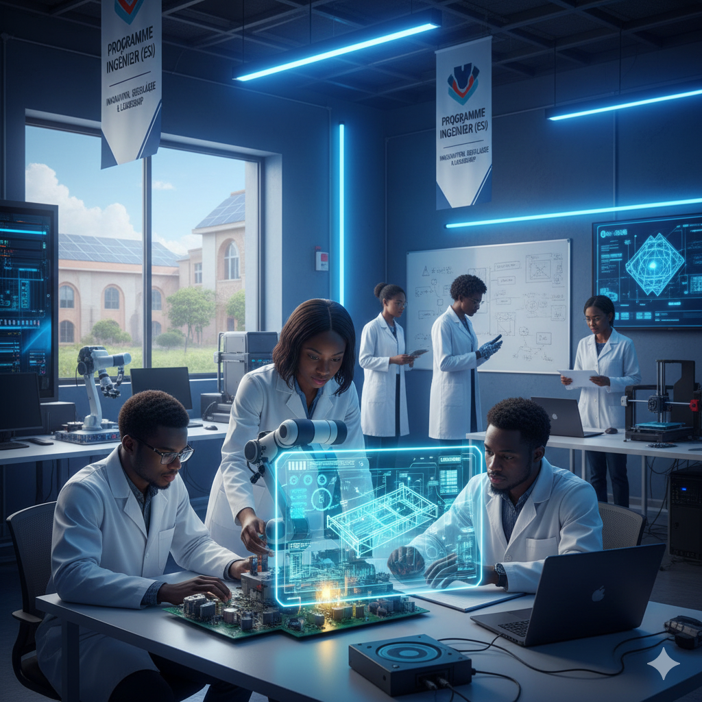

Le parcours STIC (Sciences et Technologies de l'Information et de la Communication), proposé par l'École Supérieure d'Industrie (ESI) de l'Institut National Polytechnique Félix Houphouët-Boigny (INP-HB), comprend deux niveaux de formation complémentaires : Technicien STIC et Ingénieur STIC. Il est conçu pour répondre aux besoins croissants des secteurs du numérique, de l'informatique et des télécommunications.
🟢 Niveau Technicien (DTS - 3 ans)
La formation débute par une première année commune (TS1), au cours de laquelle les étudiants acquièrent les fondamentaux scientifiques et technologiques indispensables. En deuxième année, les étudiants se spécialisent en Informatique ou EIT. La troisième année (TS3) est consacrée à la consolidation des compétences, aux projets professionnels et au stage en entreprise.
À l'issue de la TS1, le parcours Technicien STIC se structure en deux spécialités :
🟢 Niveau Ingénieur (5 ans)
Le cycle Ingénieur STIC débute par une première année commune (I1), qui permet de consolider les connaissances scientifiques et techniques. En deuxième année, les étudiants choisissent l'une des trois spécialités. La troisième année (I3) est consacrée à la spécialisation avancée, aux projets de fin d'études et au stage industriel de longue durée.
Cette organisation progressive et spécialisée du parcours STIC, à la fois au niveau Technicien et Ingénieur, permet aux étudiants de maîtriser les fondamentaux, puis de se spécialiser selon leurs aptitudes et ambitions, assurant ainsi une formation complète et adaptée aux besoins du marché et de l'industrie.
Le Diplôme de Technicien Supérieur (DTS) en STIC est un programme de formation professionnelle de trois ans conçu pour former des techniciens supérieurs compétents et opérationnels. Il combine des cours théoriques approfondis, des travaux pratiques intensifs et des projets concrets afin de développer à la fois les compétences techniques et le sens de l'initiative.
Structure du programme DTS (3 ans) :
Les étudiants acquièrent des connaissances pointues, maîtrisent les outils modernes et sont préparés à relever les défis du marché du travail. Ce programme met l'accent sur l'excellence, l'innovation et la professionnalisation pour assurer une employabilité optimale dès l'obtention du diplôme.
La TS STIC 1 constitue la première année du parcours STIC au niveau technicien. Elle représente un tronc commun obligatoire pour tous les étudiants admis dans la filière. Cette année a pour objectif principal de poser des bases solides et homogènes en sciences et technologies de l'information, afin de préparer efficacement les étudiants à la spécialisation en Informatique ou en EIT (Électronique, Informatique et Télécommunications) à partir de la deuxième année.
🎯 Objectifs de la TS STIC 1
La TS STIC 1 vise à :
🧭 Rôle de la TS STIC 1 dans le parcours
La TS STIC 1 joue un rôle fondamental dans le parcours STIC :
➡️ Suite du parcours
À l'issue de la TS STIC 1, les étudiants poursuivent en TS STIC 2 dans l'une des deux spécialités du parcours, selon les critères pédagogiques et leur projet professionnel.

La TS STIC 2 – spécialité Informatique correspond à la deuxième année du parcours STIC au niveau technicien, orientée vers la maîtrise pratique et opérationnelle des technologies informatiques. Elle s'adresse aux étudiants ayant validé la TS STIC 1 et souhaitant se spécialiser dans les métiers liés au développement logiciel, à la gestion des systèmes informatiques et aux applications numériques.
🎯 Objectifs de la TS STIC 2 – Informatique
La formation vise à :
💼 Préparation à la 3ème année
La TS STIC 2 prépare directement à la TS STIC 3 qui se concentrera sur :
La TS STIC 2 – spécialité EIT constitue la deuxième année de spécialisation du parcours STIC au niveau technicien. Elle est destinée aux étudiants ayant validé la TS STIC 1 et souhaitant s'orienter vers les domaines de l'électronique appliquée, de l'informatique technique et des télécommunications.
🎯 Objectifs de la TS STIC 2 – EIT
La formation a pour objectifs de :
💼 Préparation à la 3ème année
La TS STIC 2 prépare directement à la TS STIC 3 qui se concentrera sur :
La TS STIC 3 constitue la troisième et dernière année du Diplôme de Technicien Supérieur en STIC. Cette année est entièrement dédiée à la professionnalisation des étudiants et à leur préparation à l'insertion dans le monde du travail.
🎯 Objectifs de la TS STIC 3
La troisième année vise à :
📋 Structure de la TS STIC 3
La troisième année se décompose en trois phases principales :
🎓 Validation du diplôme
L'obtention du DTS STIC est conditionnée par :
💼 Débouchés immédiats
Les diplômés de TS STIC 3 peuvent immédiatement intégrer le marché du travail comme :
Le programme Ingénieur STIC de l'ESI est un cycle de formation de cinq ans conçu pour former des professionnels hautement qualifiés, capables de concevoir, gérer et innover dans des projets complexes. Il allie une solide formation théorique à des travaux pratiques, des projets industriels et des stages en entreprise pour développer les compétences techniques, analytiques et managériales des étudiants.
Structure du programme Ingénieur (5 ans) :
Ce cycle, de niveau supérieur, permet de développer des compétences avancées en informatique, électronique et télécommunications. Le cursus met l'accent sur l'innovation, la recherche appliquée et la responsabilité sociale, afin de préparer des ingénieurs polyvalents, autonomes et prêts à relever les défis du monde professionnel et à contribuer activement au développement technologique et économique.
La première année du cycle ingénieur STIC (I1) constitue le tronc commun qui permet de consolider les connaissances scientifiques et techniques nécessaires pour aborder les enseignements spécialisés des années suivantes.
🎯 Objectifs de la I1
La première année ingénieur vise à :
🧠 Compétences développées
À l'issue de la I1, l'étudiant est capable de :

Objectifs :
Compétences développées :
💼 Préparation à la 3ème année
La deuxième année prépare à la troisième année qui se concentrera sur :
Objectifs :
Compétences développées :
💼 Préparation à la 3ème année
La deuxième année prépare à la troisième année qui se concentrera sur :
Objectifs :
Compétences développées :
💼 Préparation à la 3ème année
La deuxième année prépare à la troisième année qui se concentrera sur :
La troisième année du cycle ingénieur STIC (I3) est l'année de la professionnalisation et de la validation du diplôme d'ingénieur. Elle se concentre sur le projet de fin d'études, le stage et la préparation à l'insertion professionnelle.
🎯 Objectifs de la I3
La troisième année ingénieur vise à :
📋 Structure de la I3
La troisième année se décompose en trois phases principales :
🎓 Validation du diplôme d'ingénieur
L'obtention du diplôme d'ingénieur STIC est conditionnée par :
💼 Débouchés après diplôme
Les ingénieurs STIC diplômés peuvent occuper des postes tels que :
🎓 Poursuite d'études
Les diplômés peuvent également poursuivre en :